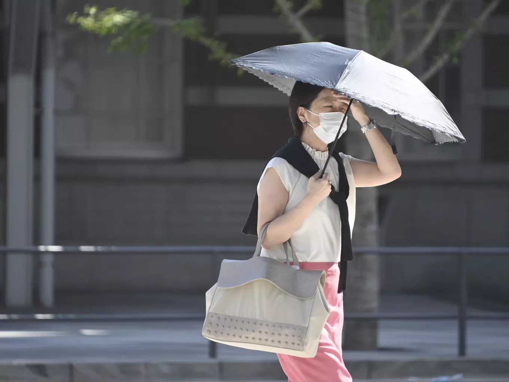
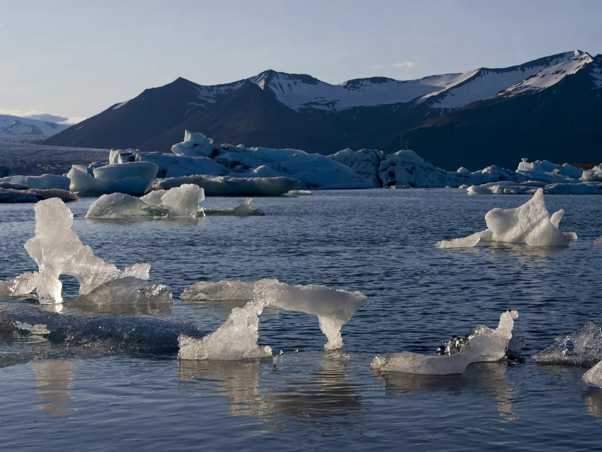
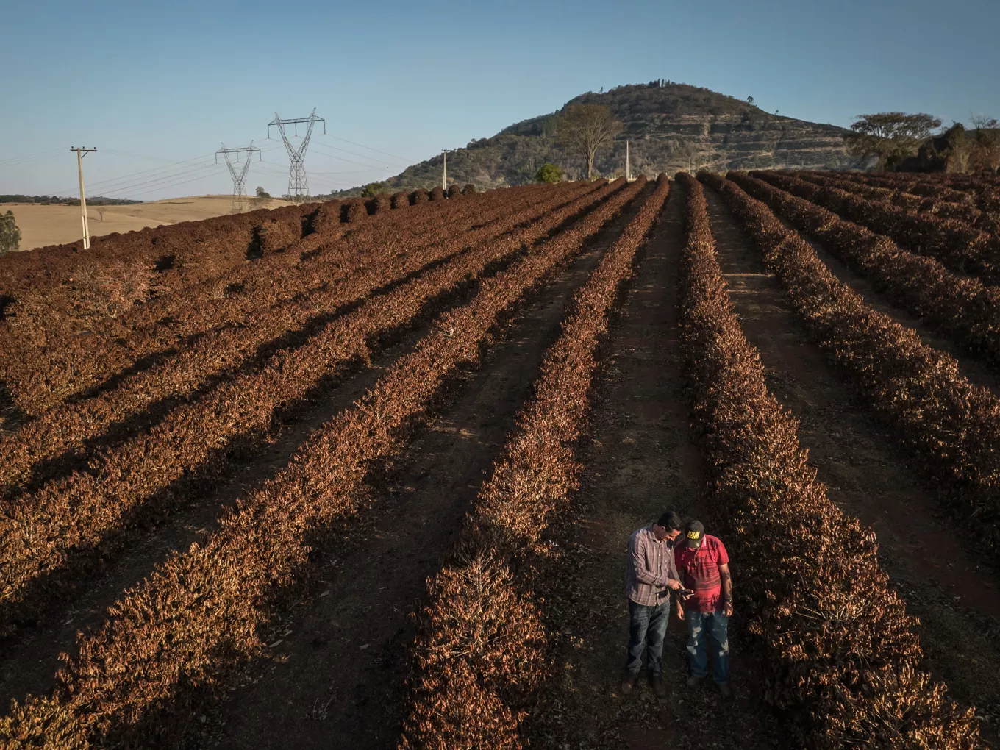
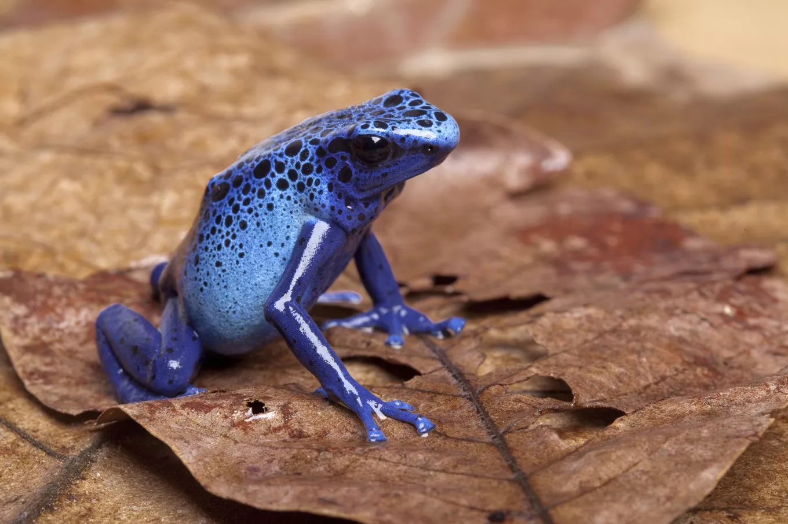
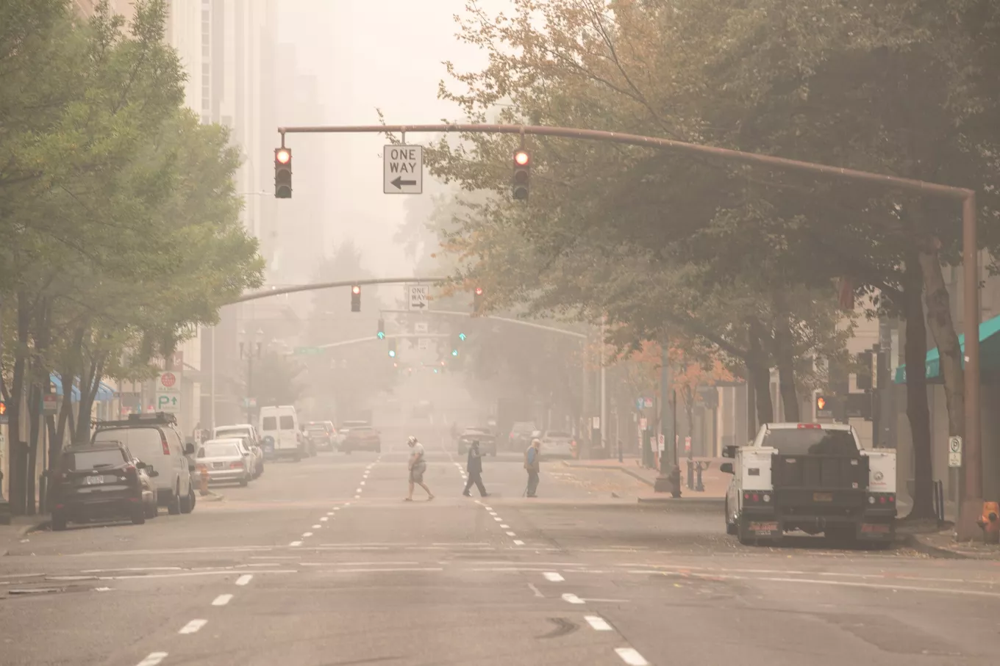

Climate change is our planet’s greatest existential threat. If we don’t limit greenhouse gas emissions from the burning of fossil fuels, the consequences of rising global temperatures include massive crop and fishery collapse, the disappearance of hundreds of thousands of species, and entire communities becoming uninhabitable. While these outcomes may still be avoidable, climate change is already causing suffering and death. From raging wildfires and supercharged storms, its compounding effects can be felt today, outside our own windows.
-Understanding these impacts can help us prepare for what’s here, what’s avoidable, and what’s yet to come, and to better prepare and protect all communities. Even though everyone is or will be affected by climate change, those living in the world’s poorest countries—which have contributed least to the problem—are the most climate-vulnerable. They have the fewest financial resources to respond to crises or adapt, and they’re closely dependent on a healthy, thriving natural world for food and income. Similarly, in the United States, it is most often low-income communities and communities of color that are on the frontlines of climate impacts. And because climate change and rising inequality are interconnected crises, decision makers must take action to combat both—and all of us must fight for climate justice. Here’s what you need to know about what we’re up against.
As global temperatures climb, widespread shifts in weather systems occur, making events like droughts, hurricanes, and floods more intense and unpredictable. Extreme weather events that may have hit just once in our grandparents’ lifetimes are becoming more common in ours. However, not every place will experience the same effects: Climate change may cause severe drought in one region while making floods more likely in another.

Already, the planet has warmed 1.1 degrees Celsius (1.9 degrees Fahrenheit) since the preindustrial era began 250 years ago. And scientists warn it could reach a worst-case scenario of 4 degrees Celsius (7.2 degrees Fahrenheit) by 2100 if we fail to tackle the causes of climate change—namely, the burning of fossil fuels (coal, oil, and gas).>
From the poles to the tropics, climate change is disrupting ecosystems. Even a seemingly slight shift in temperature can cause dramatic changes that ripple through food webs and the environment.

Sea level rise -
Scientists predict that melting sea ice and glaciers, as well as the fact that warmer water expands in volume, could cause sea levels to rise as much as 3.61 feet by the end of the century, should we fail to curb emissions. The extent (and pace) of this change would devastate low-lying regions, including island nations and densely populated coastal cities like New York City and Mumbai.
But sea level rise at far lower levels is still costly, dangerous, and disruptive. Scientists predict that the United States will see a foot of sea level rise by 2050, which will regularly damage infrastructure, like roads, sewage treatment plants, and even power plants. Beaches that families have grown up visiting may be gone by the end of the century. Sea level rise also harms the environment, as encroaching seawater can both erode coastal ecosystems and invade freshwater inland aquifers, which we rely on for agriculture and drinking water. Saltwater incursion is already reshaping life in nations like Bangladesh, where one-quarter of the lands lie less than 7 feet above sea level.
Less predictable growing seasons-
In a warming world, farming crops is more unpredictable—and livestock, which are sensitive to extreme weather, become harder to raise. Climate change shifts precipitation patterns, causing unpredictable floods and longer-lasting droughts. More frequent and severe hurricanes can devastate an entire season’s worth of crops. Meanwhile, the dynamics of pests, pathogens, and invasive species—all of which are costly for farmers to manage—are also expected to become harder to predict. This is bad news, given that most of the world’s farms are small and family-run. One bad drought or flood could decimate an entire season’s crop or herd. For example, in June 2022, a triple-digit heat wave in Kansas wiped out thousands of cows. While the regenerative agriculture movement is empowering rural communities to make their lands more resilient to climate change, unfortunately, not all communities can equitably access the support services that can help them embrace these more sustainable farming tactics.

Reduced soil health -
Healthy soil has good moisture and mineral content and is teeming with bugs, bacteria, fungi, and microbes that in turn contribute to healthy crops. But climate change, particularly extreme heat and changes in precipitation, can degrade soil quality. These impacts are exacerbated in areas where industrial, chemical-dependent monoculture farming has made soil and crops less able to withstand environmental changes.
Food shortages -Ultimately, impacts to our agricultural systems pose a direct threat to the global food supply. And food shortages and price hikes driven by climate change will not affect everyone equally: Wealthier people will continue to have more options for accessing food, while potentially billions of others will be plummeted into food insecurity—adding to the billions that already have moderate or severe difficulty getting enough to eat.
It’s about far more than just the polar bears: Half of all animal species in the world’s most biodiverse places, like the Amazon rainforest and the Galapagos Islands, are at risk of extinction from climate change. And climate change is threatening species that are already suffering from the biodiversity crisis, which is driven primarily by changes in land and ocean use (like converting wild places to farmland) and direct exploitation of species (like overfishing and wildlife trade). With species already in rough shape—more than 500,000 species have insufficient habitat for long-term survival—unchecked climate change is poised to push millions over the edge.

Climate change rapidly and fundamentally alters (or in some cases, destroys) the habitat that wildlife have incrementally adapted to over millennia. This is especially harmful for species’ habitats that are currently under threat from other causes. Ice-dependent mammals like walruses and penguins, for example, won’t fare well as ice sheets shrink. Rapid shifts in ocean temperatures stress the algae that nourishes coral reefs, causing reefs to starve—an increasingly common phenomenon known as coral bleaching. Disappearing wetlands in the Midwest’s Prairie Pothole Region means the loss of watering holes and breeding grounds for millions of migratory birds. (Many species are now struggling to survive, as more than 85 percent of wetlands have been lost since 1700). And sea level rise will inundate or erode away many coastal habitats, where hundreds of species of birds, invertebrates, and other marine species live.
Ultimately, the way climate change impacts weather, the environment, animals, and agriculture affects humanity as well. But there’s more. Around the world, our ways of life—from how we get our food to the industries around which our economies are based—have all developed in the context of relatively stable climates. As global warming shakes this foundation, it promises to alter the very fabric of society. At worst, this could lead to widespread famine, disease, war, displacement, injury, and death. For many around the world, this grim forecast is already their reality. In this way, climate change poses an existential threat to all human life.

Human health -
Climate change worsens air quality. It increases exposure to hazardous wildfire smoke and ozone smog triggered by warmer conditions, both of which harm our health, particularly for those with pre-existing illnesses like asthma or heart disease.
Insect-borne diseases like malaria and Zika become more prevalent in a warming world as their carriers are able to exist in more regions or thrive for longer seasons. In the past 30 years, the incidence of Lyme disease from ticks has nearly doubled in the United States. Thousands of people face injury, illness, and death every year from more frequent or more intense extreme weather events. At a 2-degree Celsius rise in global average temperature, an estimated one billion people will face heat stress risk. In the summer of 2022 alone, thousands died in record-shattering heat waves across Europe. Weeks later, dozens were killed by record-breaking urban flooding in the United States and Korea—and more than 1,500 people perished in the flooding in Pakistan, where resulting stagnant water and unsanitary conditions threaten even more.
The effects of climate change—and the looming threat of what’s yet to come—take a significant toll on mental health too. One recent study (the largest of its kind to date) surveyed 10,000 young people from 10 different countries. Forty-five percent of respondents said that their feelings about climate change, varying from anxiety to powerlessness to anger, impacted their daily lives.